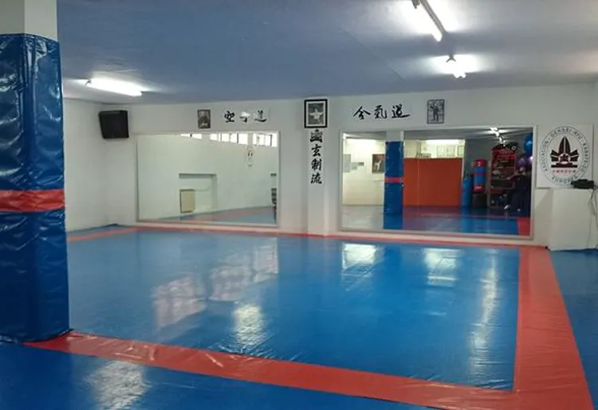
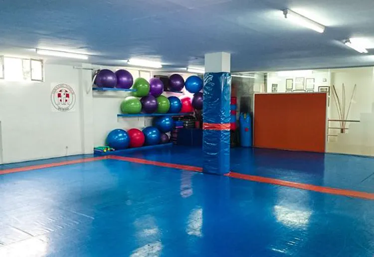
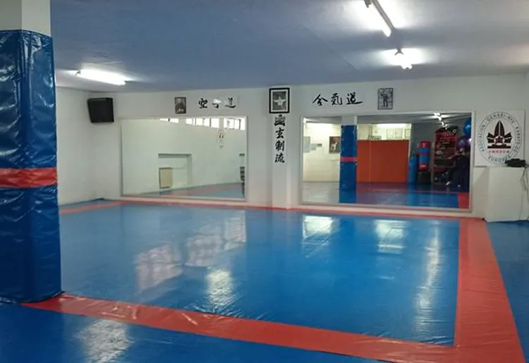
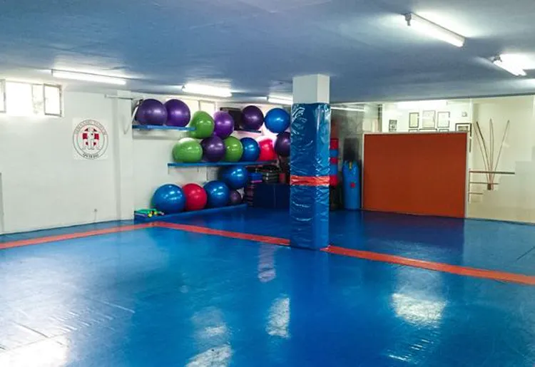

Bienvenidos al Gimnasio Taikum
 




El Gimnasio Taikum fue inaugurado en el año 1982, siendo uno de los primeros gimnasios dedicados exclusivamente a la enseñanza de karate. Hoy en día se pueden practicar otras disciplinas deportivas y marciales como: Karate, Krav Maga, Contact Karate, Tai chi, Body Fit, MMA/Grappling y Tonificación.
Uno de los principales objetivos es que toda persona que entrene en nuestro gimnasio consiga resultados físicos y técnicos importantes. En el Gimnasio Taikum encontrarás un ambiente de trabajo agradable y serio, teniendo como principal objetivo que nuestros clientes se sientan como en su casa, ofreciendo calidad de enseñanza y teniendo al frente de cada actividad profesores altamente cualificados.